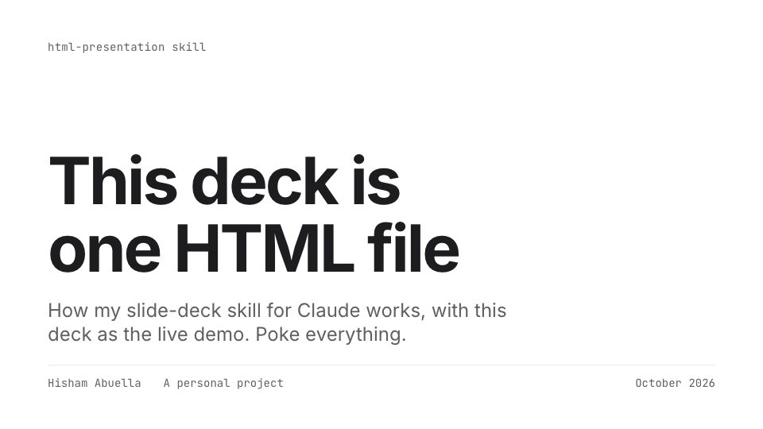
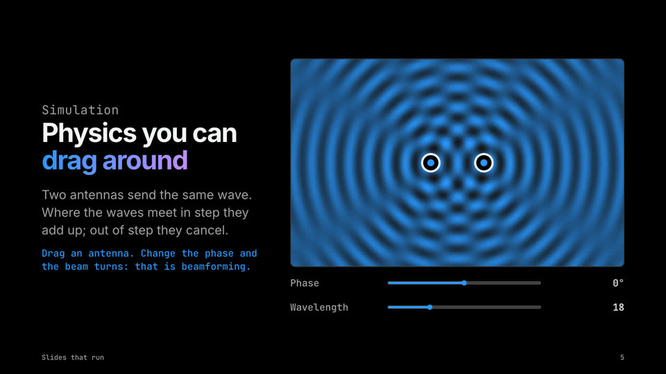

This is the real deck, not a video. Click it, then use the arrow keys. Inside it, S opens themes, M draws, G shows every slide. Open it full screen.
The Idea, Simply
It does the job of a PowerPoint or Keynote file: slides, themes, speaker notes, a presenter view, a PDF for printing. What changes is what it is made of.
A slide is just a web page with a fixed size. Mine are 1920 by 1080 pixels, the shape of a TV. The browser scales that stage to whatever screen you have, so a phone, a laptop and a projector all show the same slide, only bigger or smaller.
Each slide is one <section> in the file. This is a whole slide:
<section class="slide" data-layout="statement" data-id="pricing">
<h2>One sentence, set big, is a whole slide.</h2>
<aside class="notes"><p>Pause here.</p></aside>
</section>The layout name tells the engine where things go. The notes are for the speaker and only appear in the presenter window. The id gives the slide its own link. That is everything a slide needs.
Three layers do the rest. HTML holds the words. CSS decides the look: colors, fonts, spacing. JavaScript adds the motion and the tools. Swap the CSS and the same words become a board report, a lab talk or a classroom lesson. That is what the buttons above are doing.
Why HTML Is a Good Home for Slides
data-theme="boardroom" and the whole deck changes. 32 themes and 35 font pairings.deck.html#pricing. K copies it.And when you need paper, the browser’s print dialog saves it as a PDF, one slide per page.
What Claude Does, and What I Do
This is my personal Claude Code skill, not Apple’s. I tell Claude who the talk is for, the story, and the real numbers. Claude picks a layout for every slide, writes them, and adds speaker notes.
Then a checker opens every slide in a hidden browser and looks for the things I stop seeing after the tenth edit: text running off the slide, type too small to read from the back of the room, weak contrast, a chart with a typo in its numbers. Claude fixes what it finds and runs it again.
For a long deck, Claude splits the outline into parts. Several helpers write their parts at the same time, then Claude joins them into one file and reads it start to end, so it sounds like one person wrote it.
Small Edits, Right in the Browser
For a typo or a new date, I don’t need Claude, or any app. The skill comes with a small editor, itself one HTML file. It opens a deck, I click a word on a slide and type, and Save writes the same file back. Only the words I changed are touched; the rest of the file stays exactly as it was.
- Open the editor and pick a deck, or drop the file on it.
- Click any text on a slide and type. The speaker notes sit under the slide.
- Find and replace works across every slide, and the deck’s title too.
- Save. In Chrome and Edge it writes the same file; other browsers download a copy.
Try it: open the editor with the budget deck from the video, or open it empty and drop in your own deck. Saving gives you your own copy; nothing is uploaded.
Things a Normal Slide Can’t Do
Keynote and PowerPoint play back what you made. A browser runs it. So a slide can hold anything a web page can: a working app, a simulation, sound, code you edit, a game. I asked Claude for a second deck with one of each. Every slide in it works; click into one and play.
A whole deck, live. Use the arrow keys, or jump below. Open it full screen.
Some of these the big apps can do too, like video and a camera. Most of them a slide file can’t do on its own. And it is a short list: a map you can pan, a 3D model you can turn, charts fed by live data, polls that count answers from phones in the room, captions as you speak. If a web page can do it, a slide can.
One Look per Job
The template comes with six core looks. On top of them sits a library: one look per profession, each with its own colors, fonts and a small detail from that world. A scope grid for a wireless engineer, a heartbeat line for a clinic, a drawing-sheet title block for a civil engineer, a ruled card for a restaurant menu. A deck carries only the looks it uses, so it stays small.
A few of them, each a complete deck. They open in a new tab.

How it worksThe deck at the top of this page. Studio look.
Slides that runApps, sound, code and a game on slides. Keynote Black look. How LLMs actually workA lesson built from my free GenAI 101 course.
How LLMs actually workA lesson built from my free GenAI 101 course. Wireless engineerSpectrum look: a scope grid and I/Q traces.
Wireless engineerSpectrum look: a scope grid and I/Q traces. Clinician caseClinic look: calm teal, one alert red.
Clinician caseClinic look: calm teal, one alert red. Budget reviewLedger look, for finance.
Budget reviewLedger look, for finance. Bridge design reviewBlueprint look, for civil engineers.
Bridge design reviewBlueprint look, for civil engineers. Investigation pitchNewsroom look, for journalists.
Investigation pitchNewsroom look, for journalists. Menu launchMenu look, for kitchens and restaurants.
Menu launchMenu look, for kitchens and restaurants. Bilingual workshopTrainer look, English and Arabic in one deck.
Bilingual workshopTrainer look, English and Arabic in one deck.
Every company, person and number in the sample decks is made up. The skill is my personal project, not Apple’s.
Where It Falls Short
- It needs a browser. Everyone has one, but you can’t open it in PowerPoint.
- The fonts come from Google Fonts. Offline, the deck falls back to your computer’s fonts.
- It is a file, not a shared document. Two people can’t edit it live at the same time.
- The editor changes words, not layouts. New slides still go through Claude.
Get the Skill
The skill is called present-in-html, and everything is on GitHub: github.com/hisham-abuella/present-in-html. It comes as a Claude Code plugin with four skills: make a deck, edit its words, review it for your audience and time slot, and publish it as a link. In Claude Code, type:
/plugin marketplace add hisham-abuella/present-in-html
/plugin install present-in-html@present-in-html-marketplaceThen ask for a presentation. It is free and MIT licensed.
What I Took Away
I used to think of HTML as the thing behind websites. It turns out to be a very good canvas for anything you look at on a screen: one file that carries its words, its look and its behavior, and opens anywhere. Slides were just the first thing I tried. Press S in the deck above and pick a look; that is the whole point in one key.
This article and every deck on this page were made with Claude Code.